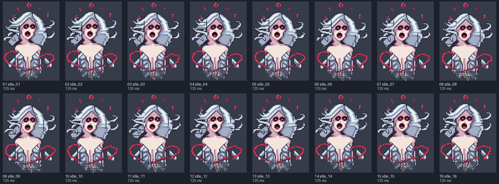

nyx-soul-idle-and-attack
Local preview. Reload to replay a non-looping clip. Yellow crosses mark the shared pivot on contact sheets.
idle
8 FPS · loop: True
Frames and timing

- idle_01: 125.00 ms
- idle_02: 125.00 ms
- idle_03: 125.00 ms
- idle_04: 125.00 ms
- idle_05: 125.00 ms
- idle_06: 125.00 ms
- idle_07: 125.00 ms
- idle_08: 125.00 ms
- idle_09: 125.00 ms
- idle_10: 125.00 ms
- idle_11: 125.00 ms
- idle_12: 125.00 ms
- idle_13: 125.00 ms
- idle_14: 125.00 ms
- idle_15: 125.00 ms
- idle_16: 125.00 ms
attack
12 FPS · loop: False

Frames and timing

- attack_01: 83.33 ms
- attack_02: 83.33 ms
- attack_03: 83.33 ms
- attack_04: 83.33 ms
- attack_05: 166.67 ms
- attack_06: 83.33 ms
- attack_07: 83.33 ms
- attack_08: 83.33 ms
- attack_09: 83.33 ms
- attack_10: 83.33 ms
- attack_11: 83.33 ms
- attack_12: 83.33 ms
- attack_13: 83.33 ms
- attack_14: 83.33 ms
- attack_15: 83.33 ms
- attack_16: 83.33 ms